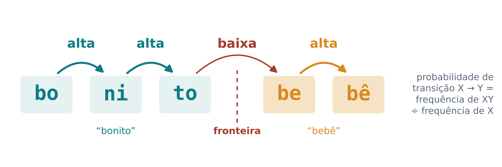
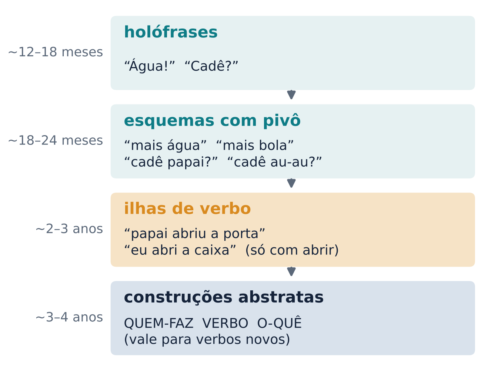
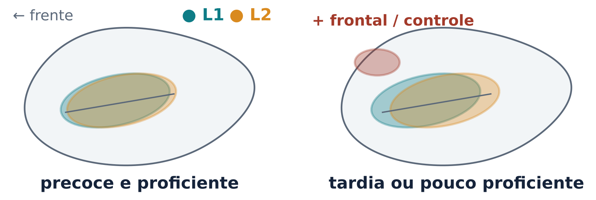
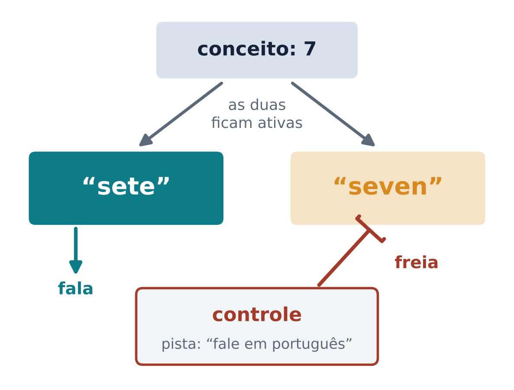

Como o bebê se torna ouvinte da sua língua, por que a idade importa (mas não decide tudo) e o que acontece no cérebro de quem fala duas línguas
Nenhum bebê nasce falando português, mas poucos anos depois quase toda criança conversa. Como isso acontece? E o que muda com duas línguas, ou com uma segunda língua aprendida mais tarde?
A primeira surpresa é que a percepção vem antes da produção. Bebês de 3 meses preferem ouvir fala a outros sons humanos, como riso e tosse, e bebês de 4 dias já usam o ritmo para distinguir uma língua familiar de uma desconhecida (Dick et al., 2016, p. 374).
Um contraste é uma diferença entre dois sons que pode mudar o sentido de uma palavra. Em português, /d/ e /g/ formam um contraste: “dado” e “gado” são palavras diferentes. O hindi tem um contraste entre um “d” dental (língua nos dentes) e um “d” retroflexo (ponta da língua curvada para trás). Para quem fala português, os dois soam como “d”.
Janet Werker e Richard Tees (1984) mostraram que bebês que aprendiam inglês distinguiam fonemas do hindi antes dos 6 meses, mas perdiam essa capacidade no segundo semestre de vida (Skeide, 2019, p. 152). A partir de mais ou menos meio ano, a experiência com a língua da casa passa a afetar a discriminação de contrastes estrangeiros; por volta de 1 ano, o bebê já tem um forte viés para os sons da sua língua (Dick et al., 2016, p. 374). Esse estreitamento é chamado de especialização perceptual. Ele acontece ainda mais cedo para as vogais do que para as consoantes (Johnson; White, 2019, p. 100).
O bebê não está “perdendo” uma capacidade à toa. Patricia Kuhl e colegas (2006) testaram bebês dos Estados Unidos e do Japão com o contraste /r/–/l/ do inglês. Entre os 6 e os 12 meses, os americanos ficaram melhores nesse contraste, que é da língua deles, enquanto os japoneses pioraram. A especialização é sintonia fina: melhora o que importa e diminui o que não importa.
À medida que o bebê forma as categorias de sons da sua língua, sons estrangeiros parecidos passam a ser “puxados” para uma única categoria nativa, e fica difícil separá-los (Johnson; White, 2019, p. 100). A audição básica não desaparece: muda o modo de ouvir (experimento 3 do laboratório).
Ouvindo português, temos a impressão de que as palavras vêm separadas, como na escrita. Não vêm: na fala corrida, pausas e fronteiras entre palavras não coincidem (Dick et al., 2016, p. 376). Esse é o problema da segmentação. Para um bebê, que não conhece nenhuma palavra, parece impossível.
Uma pista é estatística. Pense em “bonito bebê”. Depois de bo, a sílaba ni é muito provável, porque as duas formam o começo da palavra. Já depois de to pode vir quase qualquer coisa, porque ali termina uma palavra e começa outra. A probabilidade de transição de uma sílaba X para uma sílaba Y é a frequência com que Y vem logo depois de X. Dentro das palavras ela tende a ser alta; nas fronteiras, baixa (figura 1).

Saffran, Aslin e Newport (1996) testaram essa ideia com bebês de 8 meses, que ouviram uma “língua” artificial em que só as relações estatísticas entre sílabas vizinhas marcavam as palavras. Depois de apenas 2 minutos de escuta, os bebês já segmentavam as palavras. Para os autores, bebês têm um mecanismo poderoso para calcular propriedades estatísticas do que ouvem (Saffran; Aslin; Newport, 1996).
A estatística não é a única pista. A fala natural também tem o padrão de acento das palavras e palavras já conhecidas, como “mamãe”, que ajudam a achar as vizinhas (Dick et al., 2016, p. 376). E, para formar categorias de sons, a estatística muitas vezes não basta: informação visual e lexical também conta (Dick et al., 2016, p. 375).
Para Michael Tomasello (2003, p. 4), isso faz parte da busca de padrões (pattern-finding): categorizar, analisar estatísticas de sequências e criar analogias. São habilidades gerais, que provavelmente existem de alguma forma em todos os primatas.
Ouvir uma gravação, porém, não basta. Kuhl, Tsao e Liu (2003) expuseram bebês americanos de 9 meses a falantes nativos de mandarim em 12 sessões de laboratório. Depois, esses bebês discriminavam sons do mandarim melhor que um grupo controle que só ouviu inglês nas sessões. Outro grupo recebeu os mesmos falantes e materiais gravados, em vídeo ou só em áudio, e não aprendeu. O aprendizado fonético nessa idade depende da interação social (Kuhl; Tsao; Liu, 2003; Dick et al., 2016, p. 375).
A interação também molda a produção. O balbucio canônico (“bababa”, “dadada”) é a produção de sílabas bem formadas, com consoante e vogal. Bebês que ouvem passam a produzi-lo nos primeiros 10 meses de vida; bebês surdos, não. Ouvir importa para o desenvolvimento vocal (Oller; Eilers, 1988). Mas o balbucio não é só exercício da boca: bebês surdos expostos desde o nascimento a uma língua de sinais “balbuciam” com as mãos (Petitto; Marentette, 1991).
Goldstein, King e West (2003) testaram o papel da resposta dos pais. Mães de bebês de 8 meses reagiam às vocalizações dos filhos logo depois delas (resposta contingente) ou em momentos sem relação com elas. Só a resposta contingente tornou o balbucio mais complexo e maduro, e a mudança persistiu depois do experimento. O bebê não imitava sons; usava o retorno social (Goldstein; King; West, 2003).
O sagui-de-tufo-branco (Callithrix jacchus), comum no Nordeste, é um primata pequeno que vive em famílias cooperativas e troca chamados vocais em turnos. Takahashi e colegas (2015) gravaram filhotes desde o nascimento e mostraram que seus choros e chamados amadurecem nos dois primeiros meses de modo muito parecido com o dos bebês humanos. As mudanças acompanham o crescimento do aparelho vocal, mas não se explicam só por ele: o retorno vocal dos pais influencia o ritmo desse amadurecimento (Takahashi et al., 2015).
Mas correlação não prova causa: filhotes mais maduros poderiam receber mais respostas. Num segundo estudo, a equipe controlou o retorno experimentalmente: durante os dois primeiros meses de vida, um arranjo que respondia aos chamados de cada filhote deu mais retorno vocal contingente a um gêmeo e menos ao outro. Os que receberam mais retorno chegaram mais depressa ao chamado adulto do que seus gêmeos, e a diferença não se explicava por genética, experiência perinatal ou crescimento do corpo. Foi a primeira evidência experimental de aprendizado vocal na produção durante o desenvolvimento de um primata não humano (Takahashi; Liao; Ghazanfar, 2017).
Saguis não aprendem palavras. Mas um ingrediente do aprendizado vocal humano, o retorno social contingente, já existe em outro primata: em bebês e em filhotes de sagui, a “conversa” com os pais acelera o amadurecimento da voz (Goldstein; King; West, 2003; Takahashi; Liao; Ghazanfar, 2017).
A compreensão de palavras costuma começar por volta dos 9–10 meses, e a produção vem algumas semanas depois. Entre 16 e 20 meses, muitas crianças passam por uma aceleração, a “explosão do vocabulário” (Dick et al., 2016, p. 376-378). Mas a variação entre crianças típicas é enorme: por volta dos 16 meses, as do grupo dos 10% com mais palavras produzem cerca de 180, e as dos 10% com menos produzem menos de 10. A maioria das que começam devagar chega, na idade adulta, a uma linguagem parecida com a das outras (Dick et al., 2016, p. 378).
Como a criança passa de palavras soltas a frases? Há duas grandes respostas, e a área ainda discute. A tradição gerativista, de Noam Chomsky, argumenta que alguns princípios da gramática são abstratos demais para serem aprendidos só a partir das frases que a criança ouve (o argumento da “pobreza do estímulo”); a solução proposta é uma gramática universal inata (Tomasello, 2003, p. 2).
A perspectiva baseada no uso, defendida por Tomasello (2003, p. 3), responde que a criança tem, além da busca de padrões, habilidades de leitura de intenções: compartilhar a atenção com outra pessoa sobre um objeto (atenção conjunta), seguir o olhar e o apontar do outro e entender que o outro quer comunicar algo. Elas surgem por volta dos 9–12 meses. É a teoria da mente da aula 10 a serviço da língua.
Para Tomasello, a língua começa por volta de 1 ano justamente porque depende dessas habilidades, e vários estudos acharam que a atenção conjunta entre mãe e bebê se correlaciona com a compreensão e a produção iniciais (Tomasello, 2003, p. 21; Dick et al., 2016, p. 376). Num experimento, uma adulta anunciava que ia procurar o “toma”, rejeitava objetos com cara feia e sorria ao achar o certo; crianças de 18 e 24 meses aprendiam o nome do objeto que ela pretendia achar (Tomasello, 2003, p. 68).

O percurso proposto vai do concreto ao abstrato (figura 2):
A evidência central vem de verbos inventados. Num estudo, crianças ouviam muitas vezes “isto se chama dacking” para uma ação e depois eram convidadas a “fazer o Come-Come dack o Garibaldo”. As 10 crianças de 3 anos e 8 meses foram muito bem; das 10 de 2 anos e 9 meses, só 3 ficaram acima do acaso (Tomasello, 2003, p. 130-131). Somando vários estudos desse tipo, o uso de verbos novos na construção transitiva cresce aos poucos durante o terceiro e o quarto anos de vida (Tomasello, 2003, p. 129).
Um período crítico seria uma janela com limites bem marcados, fora da qual o aprendizado não acontece; um período sensível é uma fase em que a experiência tem efeito maior, com limites graduais. Há fases assim fora da linguagem: filhotes de gato privados da visão de um olho ficam com déficits duradouros, enquanto a mesma privação em gatos adultos não prejudica a visão; aves canoras que não ouvem um tutor na fase certa produzem cantos irregulares (Hernandez, 2016, p. 409). A pergunta é se a língua funciona assim.
O estudo clássico é o de Jacqueline Johnson e Elissa Newport (1989), com imigrantes coreanos e chineses nos Estados Unidos. Quem chegou antes dos 7 anos teve resultados comparáveis aos de nativos em testes de gramática do inglês; depois dos 7, o desempenho caiu com a idade de chegada até a puberdade; entre quem chegou adulto, o desempenho foi pior, mas não continuou caindo com a idade (Johnson; Newport, 1989; Mildner, 2008, p. 147).
A pronúncia mostra algo parecido. Flege, Munro e MacKay (1995) pediram a nativos do inglês que avaliassem o sotaque de 240 imigrantes italianos no Canadá, que tinham começado a aprender inglês entre 2 e 23 anos. A idade de início explicou cerca de 59% da variação no sotaque, e o uso da língua explicou mais 15%. Estudos posteriores descrevem uma relação aproximadamente linear entre idade de aquisição e sotaque (Hernandez, 2016, p. 410).
A área discorda sobre essa curva. Para Hernandez (2016, p. 407), vários achados contradizem uma versão simples da hipótese do período crítico. Já Hartshorne, Tenenbaum e Pinker (2018) analisaram dados de 669.498 falantes nativos e não nativos de inglês, coletados pela internet, e estimaram que a capacidade de aprender gramática se mantém quase até a idade adulta (17,4 anos) e depois cai de forma contínua. Eles defendem um período crítico, mas que termina bem mais tarde do que se pensava.
Em todos esses estudos, a idade de início vem misturada com anos de uso, quantidade e qualidade do input (a língua que a pessoa ouve e lê) e motivação.
Onde “tarde demais” tem sentido forte é na primeira língua. Rachel Mayberry (1993) comparou adultos surdos de nascença que aprenderam a Língua de Sinais Americana (ASL) como primeira língua, em idades diferentes, com adultos que perderam a audição no fim da infância e aprenderam ASL como segunda língua. Os que a aprenderam como segunda língua foram melhores do que os que a aprenderam como primeira língua na mesma idade. Ter uma língua na infância, qualquer uma, prepara o cérebro para as seguintes.
Um estudo com crianças de 3–4, 6–7 e 9–10 anos e adultos mostrou que a maturação do fascículo arqueado, feixe de substância branca da via dorsal que liga a área de Broca a regiões temporais posteriores, acompanha a compreensão de frases sintaticamente complexas melhor do que a maturação de uma via ventral. Crianças de 9–10 anos entendem essas frases com mais de 90% de acerto, mas adultos chegam perto de 100% (Skeide, 2019, p. 154-156).
O cérebro jovem também é mais plástico. Crianças com lesão focal perinatal (por exemplo, um AVC por volta do nascimento) costumam desenvolver linguagem normal ou quase normal, mesmo quando a lesão é grande e atinge as áreas clássicas da linguagem no hemisfério esquerdo; lesões equivalentes num adulto costumam causar afasia (Levine et al., 2016, p. 969). A plasticidade tem limites: essas crianças começam a falar com atraso, e os estudos discordam sobre o efeito do lado da lesão (Levine et al., 2016, p. 970-973).
As primeiras pesquisas com neuroimagem perguntavam se as duas línguas de um bilíngue ficavam em lugares diferentes. Um estudo de 1997 sugeriu áreas vizinhas mas separadas na área de Broca em bilíngues tardios, mas a tarefa envolvia memória e outros processos (Hernandez, 2016, p. 411-412). Depois ficou estabelecida uma grande sobreposição da atividade para a L1 (primeira língua) e a L2 (segunda língua). A pergunta passou a ser como essas áreas comuns são controladas, e a proficiência muda o recrutamento da rede de controle (Costa; Branzi; Ávila, 2016, p. 425-427; figura 3).

Bebês de 4 a 6 meses distinguem inglês de francês só olhando rostos falando sem som; aos 8 meses, só os bebês que crescem com as duas línguas ainda fazem isso (Weikum et al., 2007). Bebês bilíngues distinguem suas línguas mesmo quando elas têm ritmo parecido, como catalão e espanhol, e parecem manter por mais tempo a capacidade de discriminar sons de várias línguas (Chondrogianni, 2019, p. 164).
Crescer com duas línguas não confunde a criança: as duas línguas formam sistemas separados que interagem (Chondrogianni, 2019, p. 164). Testadas numa só língua, crianças bilíngues costumam ter vocabulário menor que monolíngues; a diferença some quando se conta o total de conceitos que a criança nomeia em pelo menos uma das línguas (Chondrogianni, 2019, p. 166; Pearson; Fernández; Oller, 1993). O desenvolvimento em cada língua depende da quantidade de input nela (Chondrogianni, 2019, p. 171-172). Isso tem consequência clínica: uma criança bilíngue com input desequilibrado pode ter um perfil parecido com o de uma criança com transtorno de linguagem e receber um diagnóstico errado (Chondrogianni, 2019, p. 163).
Quem é bilíngue não “desliga” a outra língua: as duas ficam ativas mesmo quando só uma está em uso. O modelo de controle inibitório de David Green (1998) propõe que um sistema de controle suprime as palavras da língua que não deve ser usada, com força proporcional à força dessa língua (Costa; Branzi; Ávila, 2016, p. 420; figura 4).

O modelo explica um resultado clássico. Quando bilíngues alternam entre línguas para nomear figuras ou números, a troca custa tempo (o custo de troca). Em quem domina bem mais uma das línguas, voltar para a língua mais forte custa mais do que ir para a mais fraca (Meuter; Allport, 1999). Para falar na língua fraca foi preciso frear com força a forte, e o freio ainda pesa na tentativa seguinte. Também há um custo de mistura: a mesma língua fica mais lenta num bloco misturado do que num bloco só dela (Costa; Branzi; Ávila, 2016, p. 420).
Há debate: custos simétricos aparecem em bilíngues muito proficientes e também em desequilibrados quando a troca é voluntária ou há mais tempo de preparo, o que sugere que nem tudo é inibição (Costa; Branzi; Ávila, 2016, p. 421-424).
No cérebro, o controle da língua usa uma rede que não é exclusiva da linguagem: o caudado esquerdo (nos núcleos da base), o cingulado anterior, o córtex pré-frontal lateral e o parietal inferior esquerdo. Pacientes com lesões cerebrais que passaram a alternar entre línguas sem querer (alternância patológica) foram uma das pistas para essa rede (Costa; Branzi; Ávila, 2016, p. 424).
Se bilíngues controlam duas línguas o dia todo, talvez treinem também o controle cognitivo em geral. Ellen Bialystok e colegas (2004) encontraram, em bilíngues de meia-idade e idosos, efeitos de Simon menores. (No teste de Simon, a pessoa responde à cor de um estímulo, e a resposta fica mais lenta quando ele aparece do lado oposto ao do botão; um efeito menor indica melhor controle do conflito.)
A ideia ficou famosa, mas não resistiu bem aos testes. Paap e Greenberg (2013) concluíram que não havia evidência coerente de vantagem bilíngue no processamento executivo. De Bruin, Treccani e Della Sala (2015) seguiram resumos de congressos e viram que estudos favoráveis à vantagem tinham mais chance de ser publicados do que os contrários: um viés de publicação. Uma meta-análise de Lehtonen e colegas (2018) encontrou pequenas vantagens que desapareceram depois da correção desse viés.
É a ciência funcionando: hipótese plausível, resultados iniciais animadores, replicações maiores, descoberta de um viés e revisão da conclusão. Falar duas línguas continua valendo a pena pela língua em si.
O laboratório colocou vocês no lugar dos participantes de quatro experimentos clássicos. Os resultados de uma turma pequena são ruidosos; o que importa é comparar a distribuição da turma com o que a teoria prevê.
Experimento 1 · Fluxo de sílabas. Vocês ouviram 2 minutos de uma língua inventada com quatro palavras (GATIBU, PUDAKI, BIKUTA, DIPAGU). Dentro de cada palavra a probabilidade de transição era 1,0; entre palavras, 0,33. No teste, cada palavra competia com um “pedaço de palavra” (figura 5). A previsão era que quem ouviu o fluxo acertasse, em média, mais que os 50% do acaso, e que o grupo controle, que só fez o teste, ficasse perto de 50%. Muita gente acerta acima do acaso sem saber dizer quais eram as palavras: é aprendizado implícito. Diferente do estudo original, aqui os pedaços de palavra também eram menos frequentes que as palavras.
Experimento 2 · Duas línguas. Vocês nomearam números em português e numa segunda língua, em blocos puros e depois misturados. A previsão era um custo de troca positivo e um custo de mistura. Para quem domina bem mais o português, voltar ao português poderia custar mais (Meuter; Allport, 1999). O tempo foi medido pelo toque do dedo, não pela voz, o que torna a medida imprecisa.
Experimento 3 · Ouvinte universal. Vocês julgaram se pares de sílabas eram iguais ou diferentes em dois contrastes com diferença acústica de tamanho parecido: /d/ × /g/, do português, e “d” dental × “d” retroflexo, do hindi. A previsão era desempenho perto do máximo no primeiro e mais baixo e variável no segundo: a especialização perceptual da seção 1, vista no adulto. Se alguém ouviu o retroflexo como “dr”, ele pode ter ficado fácil: encaixamos sons novos nas categorias que já temos.
Experimento 4 · As línguas da turma. O levantamento cruzou idade de início da segunda língua e proficiência autoavaliada. A expectativa era que quem começou mais cedo, ou morou fora, se avaliasse melhor, com muita dispersão. Isso não prova um período crítico: quem começa cedo também tem mais anos de uso (seção 5). E séries, jogos e internet dão muito input, mas pouca interação contingente, o ingrediente da seção 3.
Um bebê de 11 meses que ouve só português discrimina pior um contraste do hindi do que um bebê de 6 meses. Por que isso não deve ser visto apenas como uma perda?
Resposta
Porque, no mesmo período, a discriminação dos contrastes da língua materna melhora (Kuhl et al., 2006). A percepção se reorganiza em torno das categorias que importam na língua da criança: é sintonia fina, não deterioração.
No estudo de Saffran, Aslin e Newport (1996), por que foi importante que a única pista para as palavras fosse a probabilidade de transição?
Resposta
Se houvesse pausas ou acento marcando as palavras, não daria para saber se os bebês usaram a estatística das sílabas ou essas outras pistas. Tirando-as, a segmentação só pode vir do cálculo estatístico.
O primeiro estudo com saguis ligou o retorno dos pais ao amadurecimento vocal. Por que foi preciso um segundo estudo, com gêmeos?
Resposta
Porque a correlação não diz qual é a causa: filhotes mais maduros poderiam provocar mais respostas. Dando experimentalmente mais retorno contingente a um gêmeo e menos ao outro, o segundo estudo mostrou que mais retorno acelera o amadurecimento.
Uma criança de 2 anos e meio diz “eu abri a caixa”, mas não usa um verbo inventado, que só ouviu em “isto se chama dacking”, numa frase como “o urso dackou o leão”. Como a perspectiva baseada no uso interpreta isso?
Resposta
Nessa idade, a construção transitiva estaria ligada a verbos específicos já ouvidos (ilhas de verbo), não a uma regra geral. A generalização para verbos novos cresce aos poucos no terceiro e no quarto anos (Tomasello, 2003).
Por que um levantamento como o do experimento 4 não basta para demonstrar um período crítico para a segunda língua?
Resposta
Porque a idade de início vem misturada com anos de uso, quantidade e qualidade do input e motivação, e a proficiência foi autoavaliada. É preciso separar essas variáveis, como tentam estudos grandes com modelos computacionais (Hartshorne; Tenenbaum; Pinker, 2018).
Num bilíngue que domina bem mais o português, por que voltar ao português depois do inglês pode custar mais do que o contrário? E por que essa explicação é debatida?
Resposta
Pelo modelo de controle inibitório, para falar inglês foi preciso frear com força o português, e esse freio ainda pesa na tentativa seguinte. Mas custos simétricos aparecem em várias situações, e há explicações que não dependem só de inibição (Costa; Branzi; Ávila, 2016).
O que mudou na avaliação da “vantagem bilíngue” entre 2004 e 2018?
Resposta
Os primeiros estudos acharam melhor controle executivo em bilíngues; estudos posteriores não acharam evidência coerente; mostrou-se que resultados positivos eram publicados com mais frequência; e uma meta-análise viu as pequenas vantagens sumirem após corrigir esse viés (Lehtonen et al., 2018).
BIALYSTOK, E. et al. Bilingualism, aging, and cognitive control: evidence from the Simon task. Psychology and Aging, v. 19, n. 2, p. 290-303, 2004. DOI: https://doi.org/10.1037/0882-7974.19.2.290.
BIALYSTOK, E.; CRAIK, F. I. M.; LUK, G. Bilingualism: consequences for mind and brain. Trends in Cognitive Sciences, v. 16, n. 4, p. 240-250, 2012. DOI: https://doi.org/10.1016/j.tics.2012.03.001.
CHONDROGIANNI, V. Multilingual development. In: HAGOORT, P. (org.). Human language: from genes and brains to behavior. Cambridge, MA: MIT Press, 2019. p. 163-179.
COSTA, A.; BRANZI, F. M.; ÁVILA, C. Bilingualism: switching. In: HICKOK, G.; SMALL, S. L. (org.). Neurobiology of language. London: Academic Press, 2016. p. 419-430. DOI: https://doi.org/10.1016/B978-0-12-407794-2.00035-3.
DE BRUIN, A.; TRECCANI, B.; DELLA SALA, S. Cognitive advantage in bilingualism: an example of publication bias? Psychological Science, v. 26, n. 1, p. 99-107, 2015. DOI: https://doi.org/10.1177/0956797614557866.
DICK, F. et al. Language development. In: HICKOK, G.; SMALL, S. L. (org.). Neurobiology of language. London: Academic Press, 2016. p. 373-388. DOI: https://doi.org/10.1016/B978-0-12-407794-2.00031-6.
FLEGE, J. E.; MUNRO, M. J.; MacKAY, I. R. A. Factors affecting strength of perceived foreign accent in a second language. The Journal of the Acoustical Society of America, v. 97, n. 5, p. 3125-3134, 1995. DOI: https://doi.org/10.1121/1.413041.
GOLDSTEIN, M. H.; KING, A. P.; WEST, M. J. Social interaction shapes babbling: testing parallels between birdsong and speech. Proceedings of the National Academy of Sciences of the United States of America, v. 100, n. 13, p. 8030-8035, 2003. DOI: https://doi.org/10.1073/pnas.1332441100.
GREEN, D. W. Mental control of the bilingual lexico-semantic system. Bilingualism: Language and Cognition, v. 1, n. 2, p. 67-81, 1998. DOI: https://doi.org/10.1017/S1366728998000133.
HARTSHORNE, J. K.; TENENBAUM, J. B.; PINKER, S. A critical period for second language acquisition: evidence from 2/3 million English speakers. Cognition, v. 177, p. 263-277, 2018. DOI: https://doi.org/10.1016/j.cognition.2018.04.007.
HERNANDEZ, A. E. Bilingual development and age of acquisition. In: HICKOK, G.; SMALL, S. L. (org.). Neurobiology of language. London: Academic Press, 2016. p. 407-418. DOI: https://doi.org/10.1016/B978-0-12-407794-2.00034-1.
JOHNSON, E. K.; WHITE, K. S. Six questions in infant speech and language development. In: HAGOORT, P. (org.). Human language: from genes and brains to behavior. Cambridge, MA: MIT Press, 2019. p. 99-112.
JOHNSON, J. S.; NEWPORT, E. L. Critical period effects in second language learning: the influence of maturational state on the acquisition of English as a second language. Cognitive Psychology, v. 21, n. 1, p. 60-99, 1989. DOI: https://doi.org/10.1016/0010-0285(89)90003-0.
KUHL, P. K. Early language acquisition: cracking the speech code. Nature Reviews Neuroscience, v. 5, n. 11, p. 831-843, 2004. DOI: https://doi.org/10.1038/nrn1533.
KUHL, P. K. et al. Infants show a facilitation effect for native language phonetic perception between 6 and 12 months. Developmental Science, v. 9, n. 2, p. F13-F21, 2006. DOI: https://doi.org/10.1111/j.1467-7687.2006.00468.x.
KUHL, P. K.; TSAO, F.-M.; LIU, H.-M. Foreign-language experience in infancy: effects of short-term exposure and social interaction on phonetic learning. Proceedings of the National Academy of Sciences of the United States of America, v. 100, n. 15, p. 9096-9101, 2003. DOI: https://doi.org/10.1073/pnas.1532872100.
LEHTONEN, M. et al. Is bilingualism associated with enhanced executive functioning in adults? A meta-analytic review. Psychological Bulletin, v. 144, n. 4, p. 394-425, 2018. DOI: https://doi.org/10.1037/bul0000142.
LEVINE, S. C. et al. Perinatal focal brain injury: scope and limits of plasticity for language functions. In: HICKOK, G.; SMALL, S. L. (org.). Neurobiology of language. London: Academic Press, 2016. p. 969-983. DOI: https://doi.org/10.1016/B978-0-12-407794-2.00077-8.
MAYBERRY, R. I. First-language acquisition after childhood differs from second-language acquisition: the case of American Sign Language. Journal of Speech and Hearing Research, v. 36, n. 6, p. 1258-1270, 1993. DOI: https://doi.org/10.1044/jshr.3606.1258.
MEUTER, R. F. I.; ALLPORT, A. Bilingual language switching in naming: asymmetrical costs of language selection. Journal of Memory and Language, v. 40, n. 1, p. 25-40, 1999. DOI: https://doi.org/10.1006/jmla.1998.2602.
MILDNER, V. The cognitive neuroscience of human communication. New York: Lawrence Erlbaum, 2008.
OLLER, D. K.; EILERS, R. E. The role of audition in infant babbling. Child Development, v. 59, n. 2, p. 441-449, 1988. DOI: https://doi.org/10.2307/1130323.
PAAP, K. R.; GREENBERG, Z. I. There is no coherent evidence for a bilingual advantage in executive processing. Cognitive Psychology, v. 66, n. 2, p. 232-258, 2013. DOI: https://doi.org/10.1016/j.cogpsych.2012.12.002.
PEARSON, B. Z.; FERNÁNDEZ, S. C.; OLLER, D. K. Lexical development in bilingual infants and toddlers: comparison to monolingual norms. Language Learning, v. 43, n. 1, p. 93-120, 1993. DOI: https://doi.org/10.1111/j.1467-1770.1993.tb00174.x.
PETITTO, L. A.; MARENTETTE, P. F. Babbling in the manual mode: evidence for the ontogeny of language. Science, v. 251, n. 5000, p. 1493-1496, 1991. DOI: https://doi.org/10.1126/science.2006424.
SAFFRAN, J. R.; ASLIN, R. N.; NEWPORT, E. L. Statistical learning by 8-month-old infants. Science, v. 274, n. 5294, p. 1926-1928, 1996. DOI: https://doi.org/10.1126/science.274.5294.1926.
SKEIDE, M. A. A neural blueprint of language acquisition. In: HAGOORT, P. (org.). Human language: from genes and brains to behavior. Cambridge, MA: MIT Press, 2019. p. 147-161.
TAKAHASHI, D. Y. et al. The developmental dynamics of marmoset monkey vocal production. Science, v. 349, n. 6249, p. 734-738, 2015. DOI: https://doi.org/10.1126/science.aab1058.
TAKAHASHI, D. Y.; LIAO, D. A.; GHAZANFAR, A. A. Vocal learning via social reinforcement by infant marmoset monkeys. Current Biology, v. 27, n. 12, p. 1844-1852.e6, 2017. DOI: https://doi.org/10.1016/j.cub.2017.05.004.
TOMASELLO, M. Constructing a language: a usage-based theory of language acquisition. Cambridge, MA: Harvard University Press, 2003.
WEIKUM, W. M. et al. Visual language discrimination in infancy. Science, v. 316, n. 5828, p. 1159, 2007. DOI: https://doi.org/10.1126/science.1137686.
WERKER, J. F.; TEES, R. C. Cross-language speech perception: evidence for perceptual reorganization during the first year of life. Infant Behavior and Development, v. 7, n. 1, p. 49-63, 1984. DOI: https://doi.org/10.1016/S0163-6383(84)80022-3.
Material de estudo da disciplina Bases neurais da comunicação humana (UFRN), Prof. Daniel Y. Takahashi. Texto e figuras elaborados para o curso; as fontes estão nas Referências.